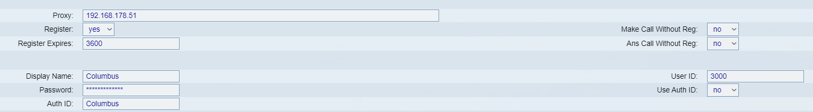

Der VoIP-Server ist für alle Vermittlungsprozesse und Verbindungsanforderungen verantwortlich. Er übernimmt die Aufgaben, die der klassischen Telefonanlage entsprechen. Mit der Anmeldung am Netzwerk steht die persönliche Telefonie-Umgebung des VoIP-Clienten, mit eigener Durchwahl, zur Verfügung. Meistens ist der VoIP-Server auf dem selben Computer wie das VoIP-Gateway (bei einer reinen Software-Lösung).
Serverarten
Bei einem Registrar kann sich ein Endpunkt registrieren. Diese Funktionalität ist typischerweise in einem Proxy-Server oder Redirect-Server integriert, damit dieser auf die Registrierungsdaten zugreifen kann.
Bei einem Location-Server können andere Server Endpunkte einen registrierten Benutzer anhand der SIP-Adresse suchen. Diese Funktionalität ist das Gegenstück zu einem Registrar und ist ebenfalls typischerweise innerhalb eines Proxy-Server oder Redirect-Server realisiert.
Ein Proxy-Server übernimmt die Weiterleitung von Nachrichten. Wenn eine Einladung bei einem Proxy-Server eingeht, leitet er sie an die Adressen weiter, an denen er die Zielperson vermutet. Hierbei kann die Nachricht auch verschiedene Wege nehmen, falls der Proxy-Server mehrere mögliche Zielpunkte kennt (Forking-Proxy). Diese Zielpunkte können selbst wieder Proxy-Server sein.
Ein Redirect-Server nimmt wie ein Proxy-Server Nachrichten an, leitet sie aber nicht weiter. Stattdessen gibt er die Adressen der Zielpunkte zurück und derjenige, der die Anfrage gestellt hat muß sich selbst an die neuen Zielpunkte wenden.
Bei SIP gibt es nur zwei Message Typen, Request und Response. Die Anforderung enthält Methoden, die die geforderte Aktion kennzeichnen, die Antwort solche, die das Ergebnis der Anforderung beschreiben. Für den Request sind sechs Methoden definiert worden:
Die Response Message hat eine ähnliche Struktur wie HTTP 1.0 und beinhaltet ebenfalls sechs Varianten:
unterstützt u. a. Anrufbeantworter, Telefonkonferenzen, kann mit
anderen Servern kommunizieren und kann mit der konventionellen
Telefonwelt zusammengeschaltet werden.
Graphische
Konfigurationstools befinden sich noch in der Entwicklung. Deshalb
müssen Sie die Konfigurationsdateien, welche sich unter
/etc/asterisk befinden, von Hand bearbeiten.
|
Die wichtigsten Konfigurationsdateien mit Kurzbeschreibung. |
|
| sip.conf |
Dort werden IP-Telefone, IP-Telfonieanbieter (Provider) und die IP-Telefonie-Benutzer definiert. |
| extensions.conf |
Hier werden die Aktionen bei einem Anruf definiert. Sowohl für Rufnummern als auch für Benutzer möglich!! |
| modem.conf |
Die Verbindung zur "alten" Telefonwelt wird hier hergestellt und definiert! (über ein Modem) |
| queues.conf |
Hier liegt die Verteilerliste. Z. B. für Call-Center usw. |
| voicemail.conf |
Hier wird alles rund um den Anrufbeantworter festgelegt. Die erhaltenen Voicemails liegen in: /var/spool/asterisk/voicemail/. |
Bei SIP gibt es nur zwei Message Typen, Request und Response. Die Anforderung enthält Methoden, die die geforderte Aktion kennzeichnen, die Antwort solche, die das Ergebnis der Anforderung beschreiben. Für den Request sind sechs Methoden definiert worden:
Die Response Message hat eine ähnliche Struktur wie HTTP 1.0 und beinhaltet ebenfalls sechs Varianten:
Auf dieser Homepage ist ein Beispiel der IP-Telefonie für
ein Firmennetzwerk.
Als Server wurde Asterisk genommen (Mehr auf
den Menüpunkten von Asterisk) und
als Clients wurde "Kphone"
für Linux und "Firefly" für Windows genommen.
Die
Clients können, in dem Beispiel auf der Homepage, miteinander über
den Server
kommunizieren. Dazu benötigt man nur z.B drei PCs
für zwei Clients und einer für
Asterisk. Es muss zwischen den
PCs ein Netzwerk vorhanden sein, über das dann
später
telefoniert wird.
Installation
apt-get install bison
apt-get install dahdi
apt-get install asterisk
Konfiguration
Es müssen die benötigten Ports freigegeben werden (5060)
Unsere Konfigurationsdateien in /etc/asterisk kopieren
Asterisk mit asterisk -vvvvvvc starten
Clientkonfiguration nach unseren Beispielen vornehmen
Befehle
sip show peers
Im Browser die IP-Adresse des Telefons aufrufen und über den Tab "Ext1" unsere Konfiguration kopieren. (Admin-Mode ist notwendig)
